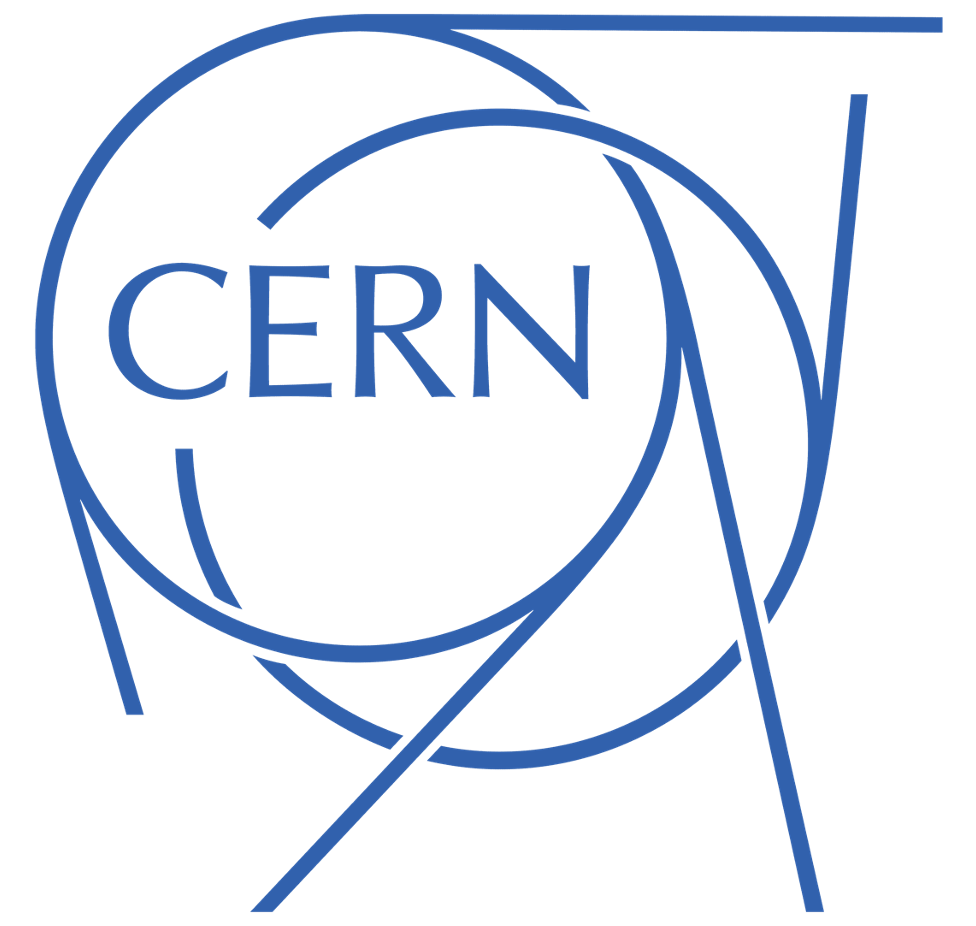

Experience
Jan 2024 - Oct 2024

Machine Learning Intern
ING Bank
Amsterdam, Netherlands
Mar 2024 - Jun 2024
Graduate Teaching Assistant · Game Theory
University of Amsterdam
Amsterdam, Netherlands
Mar 2022 - Jul 2022

Research Intern
CERN
Geneva, Switzerland